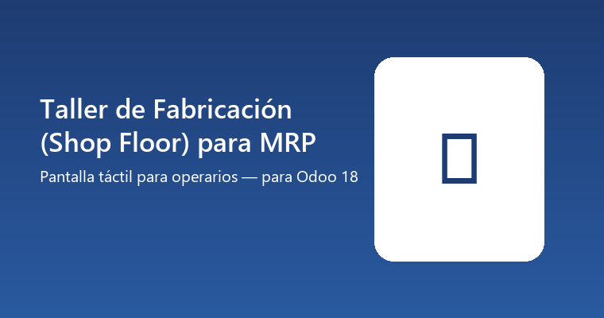

Selector de Centro de Trabajo, cola de órdenes, y una pantalla de ejecución con cronómetro en vivo, botones grandes Iniciar/Pausar/Finalizar, materiales con escaneo de lote/serie, instrucciones (nota y hoja de trabajo PDF), y bloqueo del centro de trabajo con motivo — todo llamando directamente a los mismos métodos nativos que ya usa el formulario técnico de Fabricación de Odoo Community (button_start, button_pending, button_finish, el registro de tiempos y el bloqueo de centros de trabajo).
No reemplaza ni duplica el motor de Fabricación: es la interfaz de operario que le falta a Community frente a la app Enterprise de Shop Floor, construida sobre los mismos datos que ya ve Contabilidad y cualquier reporte estándar de Fabricación.